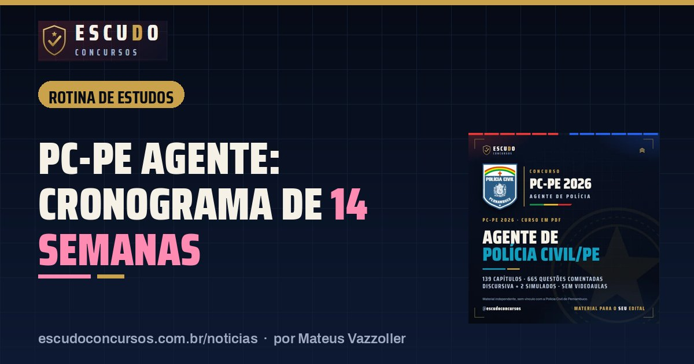

Cronograma de estudos PC-PE Agente: 14 semanas até a prova de 07/03/2027
Rotina de estudosPublicado em 26 de novembro de 2026 · por Mateus Vazzoller, ESCUDO Concursos

Quem quer vestir o colete da Polícia Civil de Pernambuco, cumprir mandados e conduzir a viatura de uma delegacia como Agente de Polícia tem 14 semanas cheias, de segunda, 30/11, até o domingo da prova, 07/03/2027, quando o Cebraspe aplica as 60 questões e a redação à tarde, em 4 horas. Este plano reparte 15 horas por semana entre os dois blocos objetivos e a redação, põe Contabilidade e Estatística logo no começo, porque são as matérias que mais demoram a assentar, e reserva as três últimas semanas para simulado e revisão. Os dias de 26/11 a 29/11 servem de largada.
| Cargo | Agente de Polícia Civil de Pernambuco, 1.200 vagas, R$ 5.667,92 |
|---|---|
| Prova | 07/03/2027 (domingo), à tarde, 4 horas, objetivas e redação |
| Tempo até a prova | 14 semanas, de 30/11/2026 a 07/03/2027, mais a largada de 26/11 a 29/11 |
| Carga sugerida | 15 horas por semana |
| Inscrições | até 16/12/2026, às 18h; taxa de R$ 250,00 paga até 18/12/2026 |
| Para não ser eliminado | 30 dos 60 pontos nas objetivas e 15 dos 30 na redação |
Curso ESCUDO Agente de Polícia Civil de Pernambuco em PDF: 139 capítulos e 665 questões comentadas, Discursiva e 2 simulados, de acordo com o edital. De R$ 47 por R$ 37 com o cupom PCPE37 até 16/12/2026.
Ver o curso
Largada: o que fazer até domingo, 29/11?
- Confira a inscrição. Ela vai até as 18h de 16/12/2026, e o boleto de R$ 250,00 pode ser pago até 18/12/2026. Quem pediu isenção consulta o resultado provisório de 27/11 a 3/12/2026 e pode recorrer de 1º a 3/12/2026.
- Monte a agenda. Três horas em cinco dias da semana, ou blocos maiores no fim de semana. O que importa é fechar as 15 horas.
- Separe papel e lápis. A prova não permite calculadora, então Contabilidade, Estatística e Raciocínio Lógico se treinam com a conta feita à mão desde a primeira semana.
Como dividir 15 horas por semana?
A divisão segue o peso de cada bloco na nota: 40 pontos de Conhecimentos Específicos, 20 de Noções de Direito e 30 da redação. O post o peso de cada bloco na prova da PC-PE explica a conta; aqui ela vira agenda.
| Bloco | Horas por semana |
|---|---|
| Contabilidade Geral e Estatística | 3h |
| Língua Portuguesa | 2h30 |
| Informática e Raciocínio Lógico | 2h30 |
| Direito Penal e Processual Penal, com as leis especiais | 2h30 |
| Constitucional, Administrativo e Legislação Estadual | 3h |
| Redação | 1h30 |
| Total | 15h |
Semana a semana até a prova
| Semana | Período | Contabilidade e Estatística | Português, Informática e Raciocínio Lógico | Noções de Direito |
|---|---|---|---|---|
| 1 | 30/11 a 06/12 | Contabilidade: conceitos, patrimônio e equação fundamental | Interpretação de textos. Windows: janelas, pastas e arquivos | Constituição de Pernambuco (artigos 101 a 105-B). Penal: princípios e aplicação da lei penal |
| 2 | 07/12 a 13/12 | Atos e fatos administrativos, contas e saldos | Tipos e gêneros textuais. Razões, proporções, regra de três e porcentagem | Estatuto do Policial Civil (Lei nº 6.425/1972). Processo Penal: lei processual e inquérito policial |
| 3 | 14/12 a 20/12 | Plano de contas e escrituração, regime de competência e de caixa | Ortografia. Configurações do Windows e Windows Explorer. Última semana para se inscrever: até 16/12, às 18h | LC nº 137/2008 e LC nº 317/2015. Constitucional: princípios fundamentais e aplicabilidade das normas |
| 4 | 21/12 a 27/12 | Estatística descritiva: gráficos, tabelas, posição e dispersão. Semana do Natal: manter ao menos as questões | Equações, inequações e sistemas lineares | Penal: crimes contra a pessoa |
| 5 | 28/12 a 03/01 | Operações diversas: juros, descontos, tributos, folha de pagamento e depreciação | Coesão e tempos verbais. Word | Estatuto do Servidor de Pernambuco (Lei nº 6.123/1968). Penal: crimes contra o patrimônio |
| 6 | 04/01 a 10/01 | Assimetria e curtose | Excel: referência absoluta e relativa e funções. Princípios de contagem | Constitucional: direitos e garantias fundamentais. Processo Penal: provas e busca e apreensão |
| 7 | 11/01 a 17/01 | Balancete de verificação | Classes de palavras, coordenação e subordinação. Lógica proposicional, tabelas-verdade e De Morgan | Processo Penal: prisão, liberdade provisória, cautelares e prisão temporária (Lei nº 7.960/1989) |
| 8 | 18/01 a 24/01 | Balanço patrimonial | Pontuação, concordância e regência. Microsoft 365 | Penal: dignidade sexual e administração pública. Hediondos, tortura e abuso de autoridade |
| 9 | 25/01 a 31/01 | DRE e Normas Brasileiras de Contabilidade | Crase e colocação pronominal. Argumentação e lógica de primeira ordem | Maria da Penha, Lei nº 14.344/2022, drogas, ECA e organizações criminosas |
| 10 | 01/02 a 07/02 | Probabilidade, condicional e independência | Reescrita de frases. Correspondência oficial | Trânsito, crimes ambientais, Desarmamento, Estatuto da Juventude e Lei nº 7.716/1989. Juizados (Lei nº 9.099/1995) e Lei nº 12.830/2013 |
| 11 | 08/02 a 14/02 | Técnicas de amostragem e tamanho amostral | Progressões, probabilidade e problemas geométricos e matriciais | Administrativo: princípios, atos, poderes, organização, controle e improbidade. Constitucional: organização do Estado e segurança pública na Constituição de Pernambuco |
| 12 | 15/02 a 21/02 | Revisão por questões | Revisão por questões | Administrativo: processo, licitações e agentes públicos. Constitucional: Poderes e funções essenciais à justiça |
| 13 | 22/02 a 28/02 | Primeiro simulado completo; o edital dos locais de prova sai em 22/02/2027 | Revisão dos erros do simulado | Revisão dos erros do simulado |
| 14 | 01/03 a 07/03 | Segundo simulado no começo da semana, depois revisão leve | Só as matérias em que o simulado foi pior | Descanso no sábado, 06/03; prova no domingo, 07/03, à tarde |
Até a semana 11, metade do tempo é teoria e metade é questão de cinco alternativas. Na semana 12 só entra conteúdo novo de Direito; nas duas últimas, nada novo.
Como treinar a redação?
A redação vale 30,00 pontos e pede um texto dissertativo de até 30 linhas sobre um tema atual de segurança pública. O mínimo é de 15,00 pontos. A nota de conteúdo perde 6 × número de erros ÷ linhas escritas: quem escreve 30 linhas com 3 erros perde 0,6 ponto; quem escreve 15 linhas com os mesmos 3 erros perde o dobro. Só tem a redação corrigida quem fica entre os 7.200 candidatos aprovados nas objetivas, somadas todas as listas.
| Semanas | O que treinar |
|---|---|
| 1 a 3 | Estrutura: introdução com a tese, dois parágrafos de argumento e conclusão |
| 4 a 8 | Um texto por semana, à mão, com temas como violência contra a mulher, facções, crimes digitais e integração entre as polícias |
| 9 a 12 | Um texto por semana em 1 hora, contando as linhas e os erros |
| 13 e 14 | O texto entra dentro do simulado, nas 4 horas de prova |
As leis da coluna de Direito servem de repertório: Maria da Penha, a Lei nº 14.344/2022, organizações criminosas e o próprio papel da Polícia Civil na Constituição de Pernambuco são o tipo de argumento que um tema de segurança pública pede.
Como fazer os simulados das semanas 13 e 14?
- Faça as 60 questões e a redação de uma vez, à tarde, em 4 horas, como no dia 07/03. Separando 1 hora para o texto, sobram 3 minutos por questão.
- Corrija pela régua do edital: pelo menos 30 pontos nas objetivas e 15,00 na redação, com a fórmula do desconto por erro.
- Marque todas as questões. Não há desconto por erro nas objetivas, então resposta em branco é ponto perdido.
- Anote os dois blocos que mais tiraram pontos e leve o resto da semana para eles.
O curso PC-PE Agente traz 2 simulados no formato do Cebraspe, um para cada uma dessas semanas, e as questões comentadas dos capítulos servem para a revisão da semana 12.
E o teste físico?
A prova de capacidade física está prevista para 30/7 a 11/8/2027, bem depois da prova escrita, mas pede meses de preparo: barra fixa (ou barra estática, para as candidatas), impulsão horizontal, natação em 50m e corrida de 12 minutos. Encaixe dois ou três treinos curtos por semana desde já, fora das 15 horas. O Edital nº 3, de 9 de novembro de 2026, detalhou as regras para candidatas gestantes nessa fase e a lista de drogas do exame toxicológico. Os índices de cada teste estão no guia do concurso.
E se eu só tiver 8 horas por semana?
Mantenha a ordem das semanas e corte em proporção: Contabilidade e Estatística com 1h30, Português com 1h30, Informática e Raciocínio Lógico com 1h30, Penal e Processo Penal com 1h30, o resto do Direito com 1h e a redação com 1h. Os Conhecimentos Específicos continuam com a maior fatia, porque valem o dobro das Noções de Direito.
Curso ESCUDO Agente de Polícia Civil de Pernambuco em PDF: 139 capítulos e 665 questões comentadas, Discursiva e 2 simulados, de acordo com o edital. De R$ 47 por R$ 37 com o cupom PCPE37 até 16/12/2026.
Ver o curso
Perguntas frequentes
Quando é a prova de Agente da PC-PE?
As provas objetivas e a redação são no domingo, 07/03/2027, à tarde, com 4 horas de duração, em Arcoverde, Caruaru, Petrolina e Recife. O edital com os locais de prova sai em 22/02/2027.
Qual matéria estudar primeiro para Agente da PC-PE?
Contabilidade Geral e Estatística, que pedem conta à mão e mais tempo para assentar, junto com Português. O bloco de Conhecimentos Específicos vale 40 dos 60 pontos das objetivas.
Quantos pontos preciso fazer na prova do Cebraspe?
Pelo menos 30 dos 60 pontos nas objetivas e 15,00 dos 30,00 pontos na redação. A classificação da primeira etapa segue a soma das notas.
Leia também
- Rotina de estudosCronograma de estudos GCM Salvador: 7 semanas até a prova da FGV de 17/01/2027
27 de novembro de 2026 · Plano de 7 semanas para a prova da FGV de 17/01/2027 para Guarda Civil Municipal de Salvador: 14 horas por semana, legislação de Salvador primeiro e corte por módulo.
- Rotina de estudosCronograma de estudos Policial Penal PE: 16 semanas até a prova de 21/03/2027
25 de novembro de 2026 · Plano de 16 semanas para a prova do Cebraspe de 21/03/2027 para Policial Penal de Pernambuco: 15 horas por semana, Execução Penal primeiro e discursiva semanal.
- Rotina de estudosCronograma Agente Administrativo de Curitiba: 3 semanas até a prova de 13/12/2026
24 de novembro de 2026 · Cronograma de 3 semanas para a prova da FAFIPA de 13/12/2026 para Agente Administrativo de Curitiba: meta de acertos por área, plano semanal e reta final.
Guia completo do concurso: edital, vagas e o que cai · Mais notícias e dicas de concursos